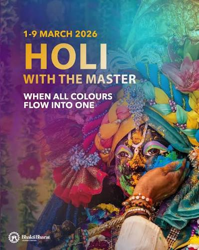

Holika Dahan (Chhoti Holi): Bonfires are lit on the eve of the festival to symbolize the burning of evil and ego.Rangwali Holi (Dhulandi): The main day of celebration where people smear colored powders (gulal), throw colored water, and enjoy festive foods like gujiya and thandai.festival to symbolize the burning of evil and ego.Rangwali Holi (Dhulandi): The main day of celebration where people smear colored powders (gulal), throw colored water, and enjoy festive foods like gujiya and thandai.